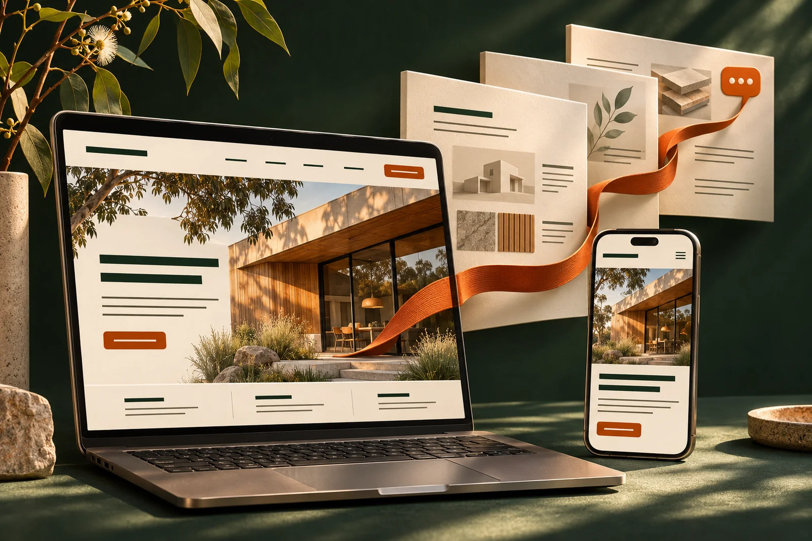

A design that fits your business.
Customer journeys, page structure, visual design and responsive layouts for phone and desktop. Navigation, forms and calls to action make the next step easy to find.
AI website design & management
A website that works for your customers. A Web Growth Architect to keep it improving.
We can design and build your website from scratch, or improve the one you have. Pair it with our Web Growth Architect specialist AI colleague for website care, search insights, customer conversations and changes you can request by message.
New website + AI setup from $5,200. Existing-site migration + AI setup $2,700. AUD ex GST. Ongoing care from $1,100/month.

New website design & build
Website build packages start from $2,500 AUD ex GST. We agree the pages, content, features and handover before we start, so you know what is being built and what it costs.
Customer journeys, page structure, visual design and responsive layouts for phone and desktop. Navigation, forms and calls to action make the next step easy to find.
Shape your supplied knowledge into clear page copy and a connected content structure. Give people a quick understanding, with deeper answers for customers and AI assistants doing their research.
Build the agreed pages and enquiry forms, set up search metadata and a sitemap, and connect the domain and hosting environment. Check performance, accessibility and the main customer journeys.
Structure approved customer information for reuse, plan useful chat and enquiry handovers, and separate public knowledge from private access. The workplace setup activates the agreed AI role and connections.
Define administrator access, protect credentials, configure HTTPS and agree backups and recovery for the environment. Plan how proposed changes are reviewed and published safely.
Test the build and give your team editing access, documentation and a practical handover. You retain your domain, accounts and agreed content, with asset and platform licence terms made clear.
The starting package covers an agreed standard website. Shopify stores, catalogue migration, bespoke features, substantial new content production and specialist integrations are quoted separately. Domain fees, hosting and third-party licences are itemised. Explore Shopify & commerce.
Our Web Growth Architect brings the ongoing role: review performance, find the next worthwhile change, respond to your feedback and keep the site working. It can begin with a suitable existing website too. The specialist service starts from $650/month, plus Small workplace management at $450/month: from $1,100/month combined, AUD ex GST. A suitable existing site can start with the $2,700 workplace setup, without the new website build fee.
Compare new-site, existing-site and ongoing costs →UI & UX design
The user interface is what someone sees. The user experience is how easily they get something done. We design both around real customer tasks.
That includes the AI assistants helping people research, compare and navigate. Clear page structure, meaningful links and predictable controls help people, assistive technology and supported browser agents understand the next step.
We shape the visual design, navigation, mobile experience, forms and enquiry paths together, then test the journeys that matter to your business.
Selling online? We connect the design to product discovery, shopping carts and checkout. Explore Shopify and commerce integration.
One website. Two ways to arrive.
A customer sees the differences, finds the right detail and knows how to ask for help.
Clear language · Accessible controls · A useful next stepTheir AI assistant can follow the structure, read the relevant information and identify the enquiry route.
Readable content · Descriptive links · Labelled formsAccess rules still apply. We test agreed journeys and supported tools; compatibility with every AI agent cannot be assumed.
Content creation & structure
People need to understand your business quickly. Deeper research needs enough substance to explain what you do, where it fits and why someone should choose it.
We turn your expertise into connected layers of content: a clear brand story, helpful service and product pages, comparisons, practical guides and evidence.
Each layer answers a different question. Customers can skim or explore. Search engines and AI systems can discover the relationships and retrieve useful detail from accessible pages.
We work with your subject experts to keep claims accurate, explain limitations and maintain information as your business changes.
See how we review visibility →A clear offer, audience and reason to care. Strong visuals and concise copy make the first read easy.
Applications, options, differences, buying considerations and practical answers help people make a decision.
Specifications, worked examples, sources, limitations and maintained guides give people and AI something substantial to learn from.
Important information stays available as useful page content. AI discovery builds on clear structure, crawlable pages and credible information; no special file or markup guarantees inclusion in AI answers.
Shopify design & management
Build a new Shopify store, improve an existing one or connect supported shopping-cart and checkout functionality to your website. Design, content and operations need to work together.
We scope the storefront design, product and collection pages, catalogue migration, variants, filters and mobile buying journey. Configure agreed shipping, tax settings and order notifications, then test cart, checkout and order handover before launch.
Your website AI can explain approved product details, compare options and guide customers to the right product or cart. Order-specific information requires a verified customer identity and appropriately restricted access.
After launch, we can manage agreed content and catalogue changes, review apps and access, investigate customer drop-off and improve the shopping journey. Inventory, fulfilment, CRM and accounting connections are scoped around supported platform access.
You keep ownership of your Shopify account and customer data. Store builds, migrations, catalogue work and integrations are project costs; ongoing store management is quoted to its workload. Shopify provides the store hosting through its own plan. Shopify subscriptions, paid themes/apps and payment fees are separate from FUSED’s fees.
Domains & managed web hosting
Your domain, hosting, certificates and website all need to work together. We can organise the setup, coordinate a move and manage the agreed environment after launch.
Help register or connect your domain, manage agreed DNS settings (the records connecting your domain to services) and track renewals. Your business remains the registrant and account owner, with delegated access for us to do the work.
Set up suitable hosting, HTTPS certificates, capacity and performance checks. Agree monitoring, updates, backups, restore checks and response arrangements for the systems we manage.
Review the existing site and DNS records, prepare the new environment and test before switching. Coordinate email-related records, redirects, rollback and a handover so other services are accounted for.
Website & AI security
A website chatbot introduces a new route into information and connected tools. Security has to cover what the AI can read, reveal and do, as well as the website it sits on.
We design corporate guardrails into access controls and operating processes. Instructions to the AI are only one layer; permissions are enforced by the application and connected systems.
Help visitors navigate, understand products and prepare enquiries.
Prepare changes for authorised review and controlled publishing.
Separate knowledge access and tools. A public conversation cannot grant itself staff privileges.
Strong administrator sign-in, least-privilege access, protected credentials, updates and checks on forms and uploads. Keep test and live publishing environments appropriately separated.
Give public chat only knowledge approved for public disclosure. Verify identity and record-level access before returning private customer details. Minimise personal data in logs and agree retention.
Give each role only the tools it needs. Enforce approval checks for publishing and sensitive commercial actions; keep payment-card data and unrestricted administrative credentials out of the AI.
Test attempts to extract restricted information, override instructions or trigger unwanted actions, including malicious instructions hidden in external content.
Set request and usage limits, constrain repeated actions and monitor suspicious activity. Define what is blocked, what is logged and when a person is alerted.
Agree backups, restore checks, change records and a way to suspend affected AI functions. Document who investigates, responds and authorises a return to service.
Security is ongoing work. Your proposal defines the controls, testing, monitoring coverage and response arrangements; specialist penetration testing or round-the-clock incident response is separately scoped. These measures reduce risk, but cannot guarantee that a website or AI system is immune to attack.
Explore corporate guardrails →Your customer-facing AI colleague
Give visitors a direct route to the information they need. Your website AI can explain options, guide them to a page, ask a useful follow-up and prepare an enquiry for your team.
It can also draw on approved supporting knowledge that does not need its own public page. Restricted customer information requires the right identity and access checks.
Connect the agreed handover to your sales inbox, CRM, service team or commerce platform. The person picking up the enquiry receives the context, so the customer can keep moving.
Every question can teach you something. Review recurring questions, unanswered requests and points of confusion to improve content, marketing and product decisions. Agree how conversations are handled and retained, with personal information minimised.
Existing website · Wants editing access · Priorities to confirm
Search, AI visibility & website analysis
A website should keep learning from the market. We connect search performance, competitor research and customer behaviour to a prioritised programme of work.
Review relevant search queries, keyword rankings, search demand, competitor coverage, backlinks, broken links, crawl issues and identifiable AI referrals. Sample agreed questions in AI answers to assess mentions, citations and missing information.
Examine navigation, useful content, customer questions, device experience and points where a journey stalls.
Review enquiry routes and confirmed submissions, then bring in your team’s view of lead quality. A button click alone does not confirm an enquiry reached you.
We bring search and competitor intelligence together with your available site analytics and customer-question insights. Required search and analytics tool licences are identified separately in your proposal. AI-answer checks are dated samples for specified questions and providers, not a universal ranking. Tracking permissions, measurement gaps and coverage are made clear. Search positions, AI recommendations and sales are not guaranteed.
Google Ads management
Bring your ads, landing pages and enquiry or purchase journey into the same review. We can set up and manage Google Search campaigns around the customers and work you want to win.
Research search intent and keywords. Group the offer into focused campaigns, agree locations and budgets, and align the ads with useful landing pages.
Review available search-term reports, keyword performance and match types. Add relevant opportunities and maintain negative keywords to exclude unsuitable searches, checking that useful demand is not blocked.
Configure and test agreed conversion tracking, subject to consent and platform access. Review spend, enquiries or purchases, cost per result and lead quality where that information is available.
Review bids, targeting, ad copy and landing-page friction together. AI can assist with analysis and recommendations; changes follow your agreed permissions and budget controls.
You retain ownership and access to your Google Ads account. Agree campaign goals, review frequency, reporting and change approvals. Budget increases require your approval.
Google Ads can form part of your Web Growth Architect service. We agree campaign setup, management workload and any additional fees before starting. Advertising spend is separate, paid to Google through your account within the approved budget.
Reports depend on available platform data and tracking; some search terms are not disclosed. Results are reviewed with attribution and data gaps in view. We do not guarantee a search position, lead volume or return on ad spend.
Discuss your Google Ads →Your Web Growth Architect
“Customers keep asking about this.” “We have a new product.” “This page no longer explains us properly.” Give the feedback in your own words.
Your Web Growth Architect can review the relevant pages, consult approved knowledge and prepare copy or website changes. It asks for missing information, identifies affected pages and brings back a preview for review.
Once authorised, changes go through the agreed publishing process, with checks, a change record and a way to restore the previous version. Routine work can follow a pre-agreed scope; sensitive changes need specific approval.
The specialist and the workplace work together. Your Web Growth Architect supplies the website and growth skills. The FUSED workplace provides knowledge, connections and corporate guardrails. Public customer chat and private staff requests keep separate permissions; the proposal sets the roles and capacity needed.
Explore the managed workplace behind it →Can you make this clearer on the website? Use our current approved service-area list.
The draft uses the approved list. Please confirm the wording before it is published.
Choose your starting point
If your existing website is a good foundation, keep it. We can migrate it, refine its content and add AI without charging you for a new website build.
01 / Start with a new website
Combined starting investment from $5,200AUD ex GST · one-off
A new website with responsive design, content structure, enquiry paths and the agreed pages and features. Small setup prepares the AI workplace, first role, standard connections and handover.
Larger sites, Shopify builds, custom integrations and additional content creation are quoted to requirements.
02 / Start with your existing website
Standard starting investment $2,700AUD ex GST · one-off
Keep your existing design. The agreed setup covers migration or connection of a suitable site, SEO and AI content refinements, customer chatbot integration, analytics setup and your Web Growth Architect’s initial configuration.
We check the platform, access, content and migration needs first. Substantial redesign, complex migrations or custom development are quoted separately before work begins.
Either route / Ongoing care & improvement
Your Small workplace keeps the AI environment, agreed connections and business knowledge working. The Web Growth Architect reviews performance, prepares improvements and acts on your feedback within the agreed service.
We agree the review frequency, improvement allowance, hosting arrangements and any campaign work in your proposal.
Combined ongoing service from $1,100per month · AUD ex GST
Already have a FUSED workplace? Use its available capacity for the specialist and agreed site work. We do not charge for a second Small workplace simply because you add a website; any extra setup is agreed first.
Other costs are itemised. Domain fees, required third-party hosting or commerce plans, paid tools, advertising spend and excess usage are separate where required. You keep ownership of your domain, store and advertising accounts.
Small’s first three workplace subscription months are included under its standard setup terms. The Web Growth Architect service, from $650/month, and third-party costs follow their own terms. The combined ongoing service starts from $1,100/month once workplace billing begins in month four.
Before we start
Want your AI workplace on your own network? Explore self-hosting and infrastructure setup.
One useful conversation
Bring one recurring task or bottleneck. We’ll help define a useful result, what it needs and whether your team or FUSED should run it.